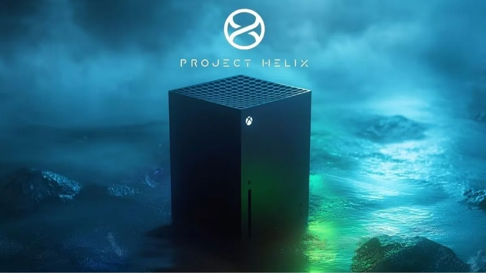
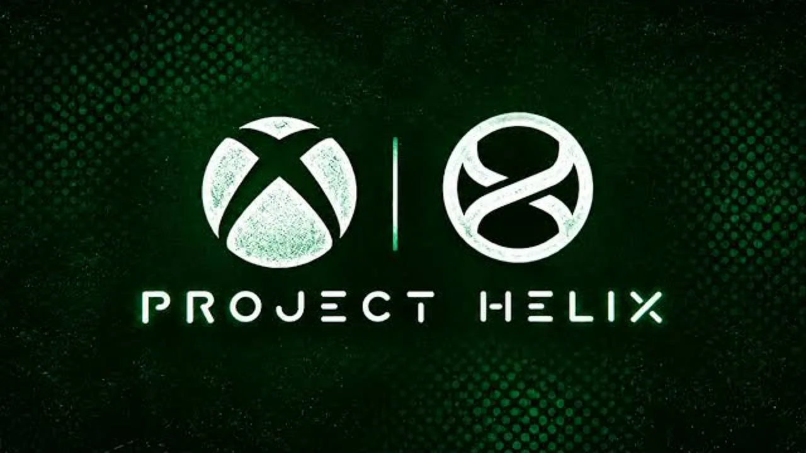
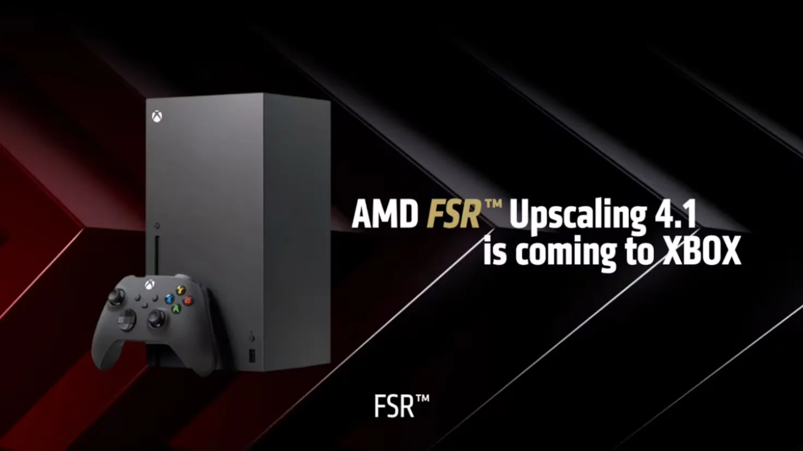
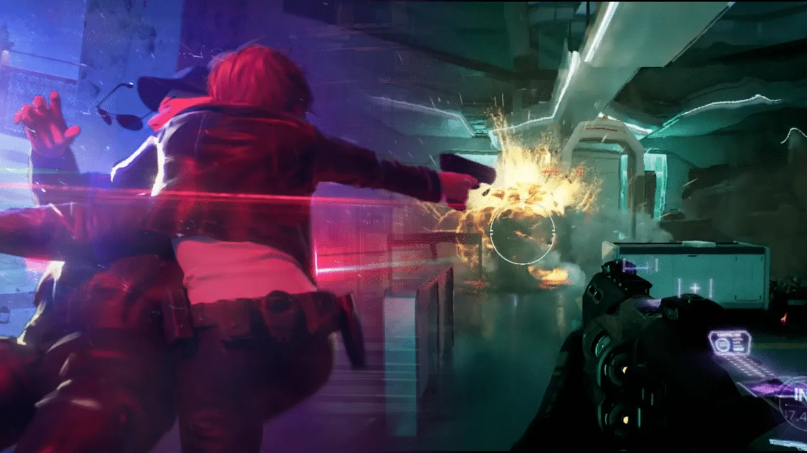

Luiso · 16 de noviembre de 2026 · 2 min de lectura
Microsoft compartió nuevos detalles sobre Project Helix, el nombre en clave de su próxima consola, y dejó en claro cuál será una de las decisiones centrales de su diseño: ofrecer acceso a juegos de PC sin convertir el dispositivo en una computadora tradicional. La explicación llegó a través de una entrevista con Jason Ronald, vicepresidente de la próxima generación de Xbox, publicada en la revista especial que la compañía preparó para celebrar los 25 años de la marca.
Ronald fue contundente al describir el objetivo del proyecto: Project Helix está diseñado para ser una consola capaz de ejecutar juegos de PC, no una PC que también pueda reproducir juegos de consola. La diferencia no es solamente una cuestión de marketing. Según el ejecutivo, la experiencia deberá mantener la simplicidad que los usuarios esperan de una Xbox: encender el dispositivo, acceder a la biblioteca y comenzar a jugar sin tener que preocuparse por actualizar controladores, configurar el sistema operativo o resolver problemas de compatibilidad.
Esto no significa que la compañía quiera limitar las posibilidades de los usuarios más experimentados. Ronald explicó que quienes busquen un mayor nivel de personalización podrán acceder a opciones avanzadas de configuración y rendimiento. La intención es ofrecer ambas experiencias: una interfaz sencilla y directa para el uso cotidiano, y herramientas más profundas para quienes prefieran ajustar distintos parámetros.
La propuesta también apunta a reducir las barreras entre los ecosistemas de consola y PC. Microsoft ya había confirmado que Project Helix estará impulsado por un sistema en chip personalizado de AMD y que será compatible con juegos de Xbox y PC. En marzo, durante la Game Developers Conference, la compañía también adelantó que planea enviar versiones alfa del hardware a desarrolladores a partir de 2027 y que trabaja para mantener jugables los títulos de cuatro generaciones de Xbox.
Otro de los puntos destacados de la entrevista fue la importancia del renderizado neuronal. Ronald explicó que esta tecnología podría ayudar a mejorar la calidad visual sin depender exclusivamente de incrementos en la potencia bruta del hardware, algo especialmente relevante en un contexto de costos crecientes para componentes como la memoria. La idea es encontrar nuevas formas de generar imágenes y mejorar el rendimiento sin trasladar todo el costo a los jugadores.
De todos modos, todavía quedan muchas preguntas sin respuesta. Microsoft no confirmó las especificaciones definitivas, el precio, la fecha de lanzamiento ni cómo funcionará exactamente la compatibilidad con las distintas tiendas y bibliotecas de PC. Tampoco explicó qué requisitos tendrán los juegos de computadora para funcionar en el sistema ni cómo se resolverán las diferencias entre configuraciones de hardware.
Por ahora, Project Helix representa un intento de combinar dos modelos que históricamente funcionaron de manera separada. La compañía quiere conservar la experiencia inmediata de una consola, pero sumar la amplitud del catálogo de PC. El desafío será lograr que esa integración resulte transparente para el usuario y no termine convirtiendo la sencillez de Xbox en una experiencia más compleja.

21 de octubre de 2026Un informe basado en información publicada por Fortune señala que la próxima consola de Microsoft, conocida como Project Helix, tendría como objetivo la temporada de fiestas de 2028 y podría alcanzar un precio de entre 1.200 y 1.800 dólares. Las cifras serían proyecciones internas, no un precio de venta confirmado, mientras que un dispositivo portátil de la marca podría llegar antes.

22 de octubre de 2026AMD y Microsoft anunciaron que la tecnología de reescalado FSR 4.1 llegará a Xbox Series X|S y a determinados modelos de la familia ROG Xbox Ally. La herramienta utiliza aprendizaje automático para reconstruir imágenes a partir de resoluciones más bajas. Las portátiles compatibles recibirán una versión preliminar el 23 de octubre, mientras que las consolas todavía no tienen una fecha pública de implementación.

7 de octubre de 2026Más de dos minutos de material de desarrollo del Perfect Dark que Microsoft canceló en 2025 aparecieron en Internet. Las imágenes muestran combate, exploración, armas, una secuencia de escape y sistemas de hacking, ofreciendo uno de los vistazos más completos al proyecto que The Initiative desarrolló durante años.
Cargando comentarios…